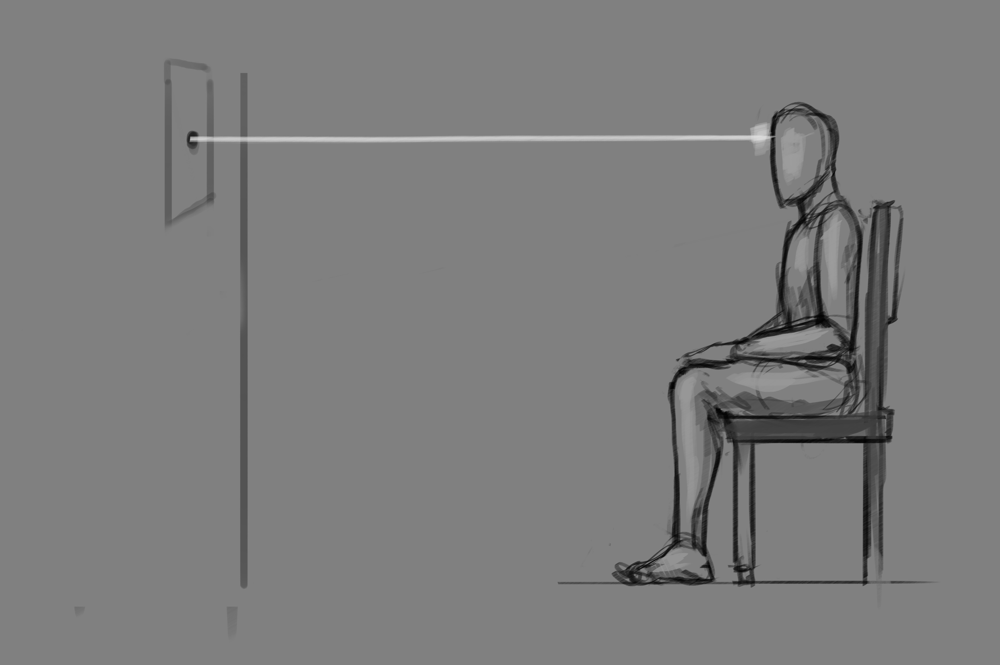

CONCENTRATION EXERCISE


THIS CONCENTRATION EXERCISE WILL HELP YOU TO FOCUS YOUR MENTAL WAVES RESULTING IN MORE EFFECTIVE AND EFFEICIENT MEDITATION SESSIONS. ALSO THIS TECHNIQUE WILL HELP GIVE YOU THE MENTAL POWER AND FOCUS TO CARRY OUT ANY DESIRED TASK TO COMPLETION.
GET A PIECE OF BLANK COMPUTER PAPER AND PUT A BLACK DOT ABOUT THE SIZE OF A GREEN PEA IN THE CENTER.
HANG THE PAPER UP ON YOUR WALL ABOUT FOUR FEET IN FRONT OF YOU, WITH THE BLACK DOT AT ROUGHLY EYE LEVEL.
FOCUS ALL YOUR ATTENTION ON THE DOT FOR FIVE MINUTES.
05:00